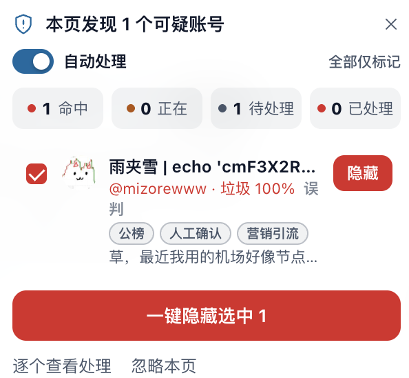

奶昔🥤
@realNyarime
之前我也不小心开了 MXGA 的自动拦截，误杀了不少推友甚至还有跑来我论坛要我解封的，现在我已经把插件的自动处理功能禁用了以防止再误杀导致的误会
如果有被我误封的，也欢迎通过 https://t.co/w367QyCSbj 联系，唯一的里推年前被封到现在申诉未果，也不想折腾这些。不过我比较介意在评论区看到有人把我block了，能被b也是一种荣幸，当然我会回敬
毕竟屏蔽后就再也看不到了，马斯克先生的算法也说明了，道不同不相为谋。能被取关说明关注我的人比我厉害了，我也表达祝贺及恭喜

ZeroClover
@ZeroClover
.@mizorewww 你的号好像被 MXGA 给标记了 https://t.co/0VYRWZZs88